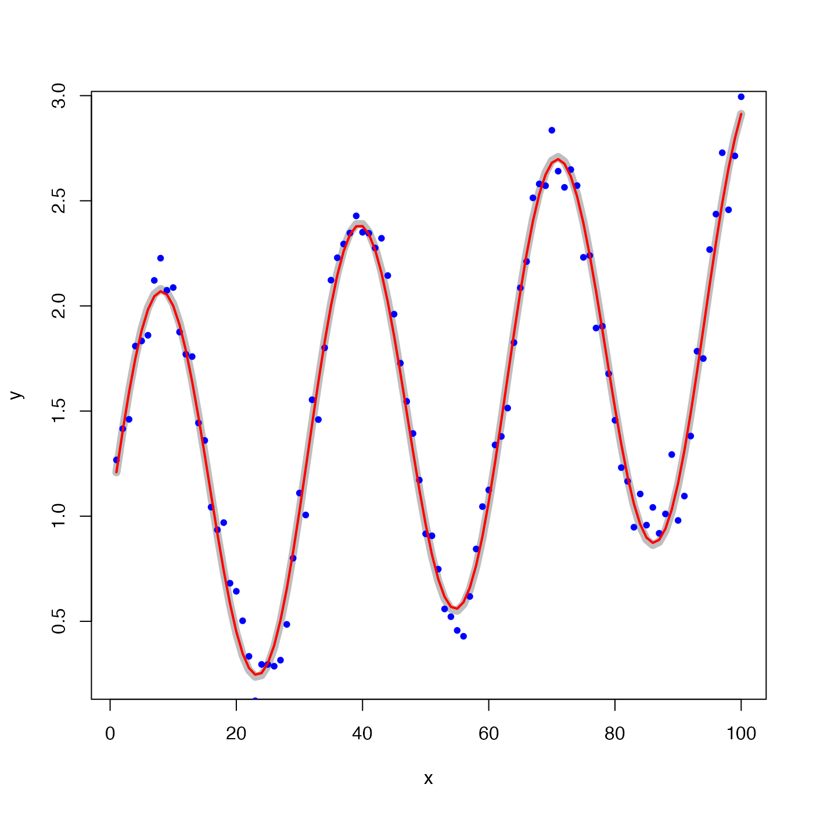
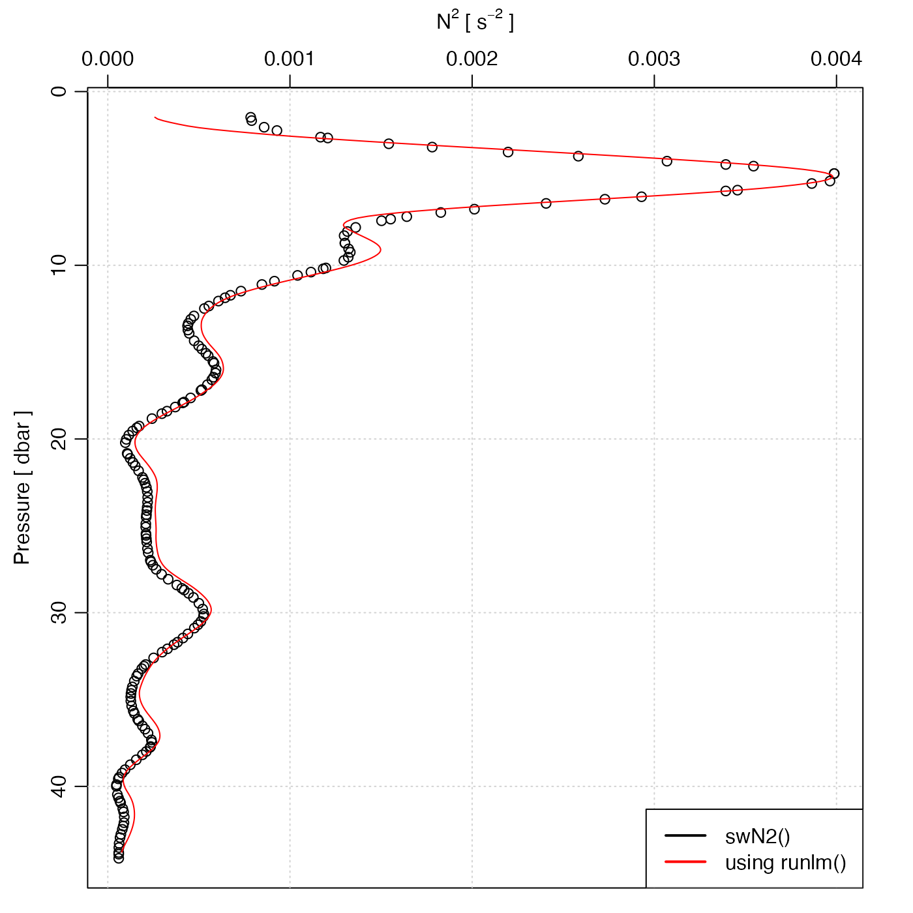

The linear model is calculated from the slope of a localized least-squares
regression model y=y(x). The localization is defined by the x difference
from the point in question, with data at distance exceeding L/2 being
ignored. With a boxcar window, all data within the local domain are
treated equally, while with a hanning window, a raised-cosine
weighting function is used; the latter produces smoother derivatives, which
can be useful for noisy data. The function is based on internal
calculation, not on lm().
runlm(x, y, xout, window = c("hanning", "boxcar"), L, deriv)a vector holding x values.
a vector holding y values.
optional vector of x values at which the derivative is to be
found. If not provided, x is used.
type of weighting function used to weight data within the window; see ‘Details’.
width of running window, in x units. If not provided, a reasonable default will be used.
an optional indicator of the desired return value; see ‘Examples’.
If deriv is not specified, a list containing vectors of
output values y and y, derivative (dydx), along with
the scalar length scale L. If deriv=0, a vector of values is
returned, and if deriv=1, a vector of derivatives is returned.
library(oce)
# Case 1: smooth a noisy signal
x <- 1:100
y <- 1 + x/100 + sin(x/5)
yn <- y + rnorm(100, sd=0.1)
L <- 4
calc <- runlm(x, y, L=L)
plot(x, y, type='l', lwd=7, col='gray')
points(x, yn, pch=20, col='blue')
lines(x, calc$y, lwd=2, col='red')

# Case 2: square of buoyancy frequency
data(ctd)
par(mfrow=c(1,1))
plot(ctd, which="N2")
rho <- swRho(ctd)
z <- swZ(ctd)
zz <- seq(min(z), max(z), 0.1)
N2 <- -9.8 / mean(rho) * runlm(z, rho, zz, deriv=1)
lines(N2, -zz, col='red')
legend("bottomright", lwd=2, bg="white",
col=c("black", "red"),
legend=c("swN2()", "using runlm()"))
